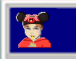
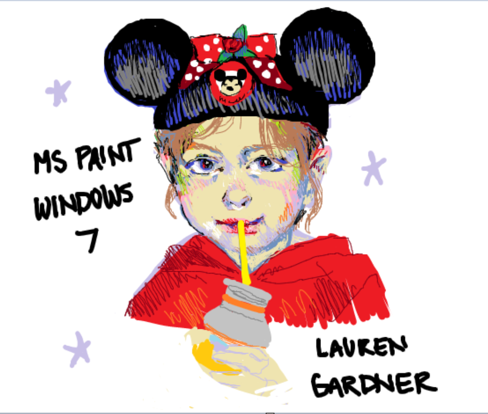
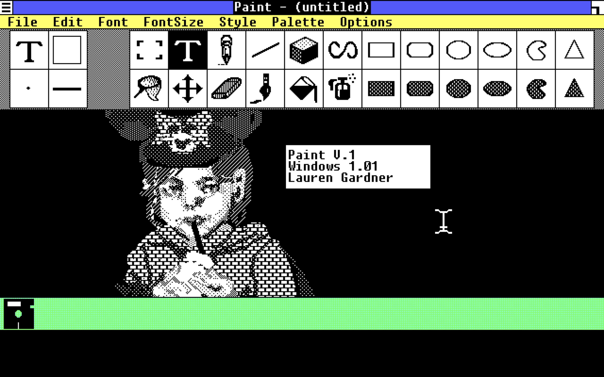
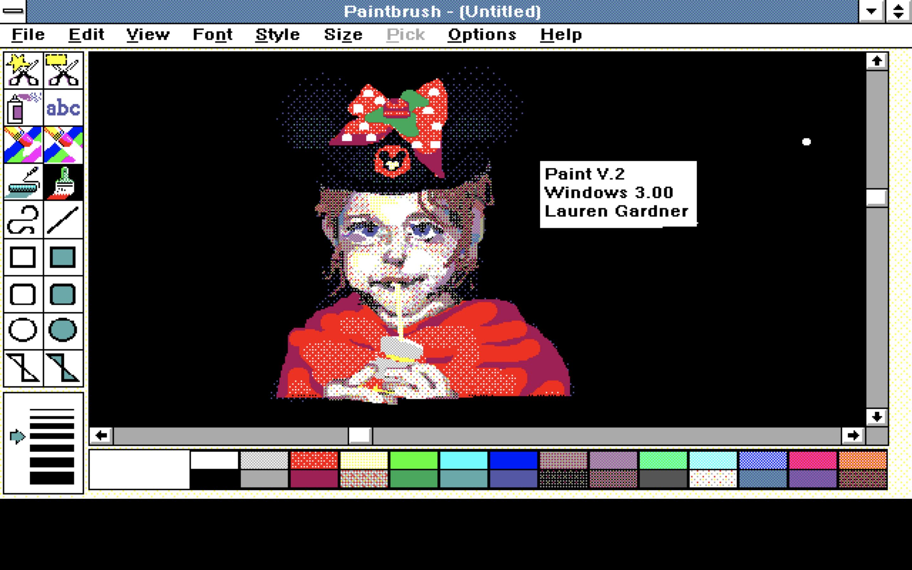
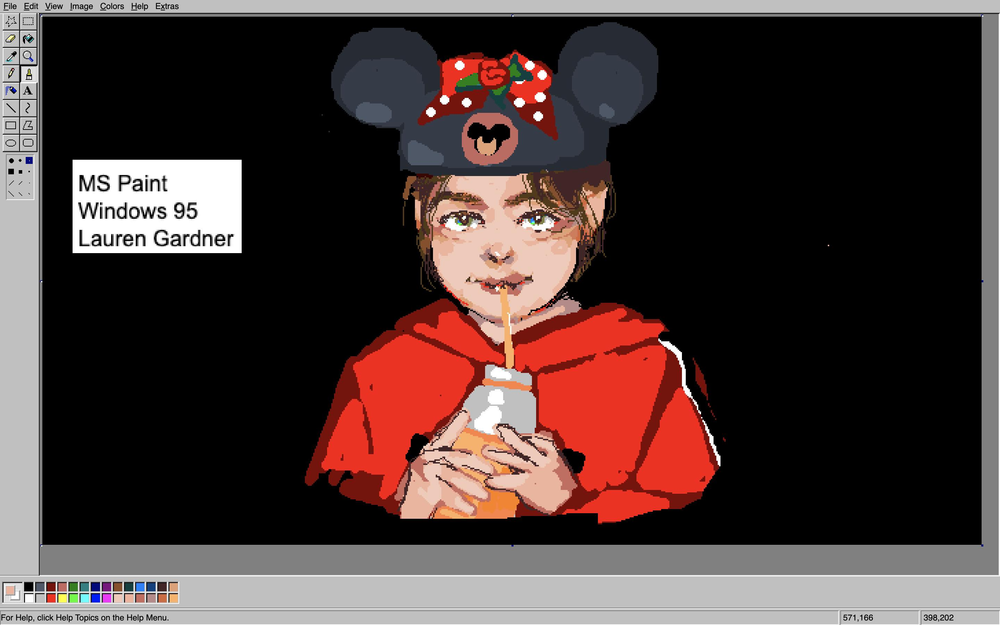
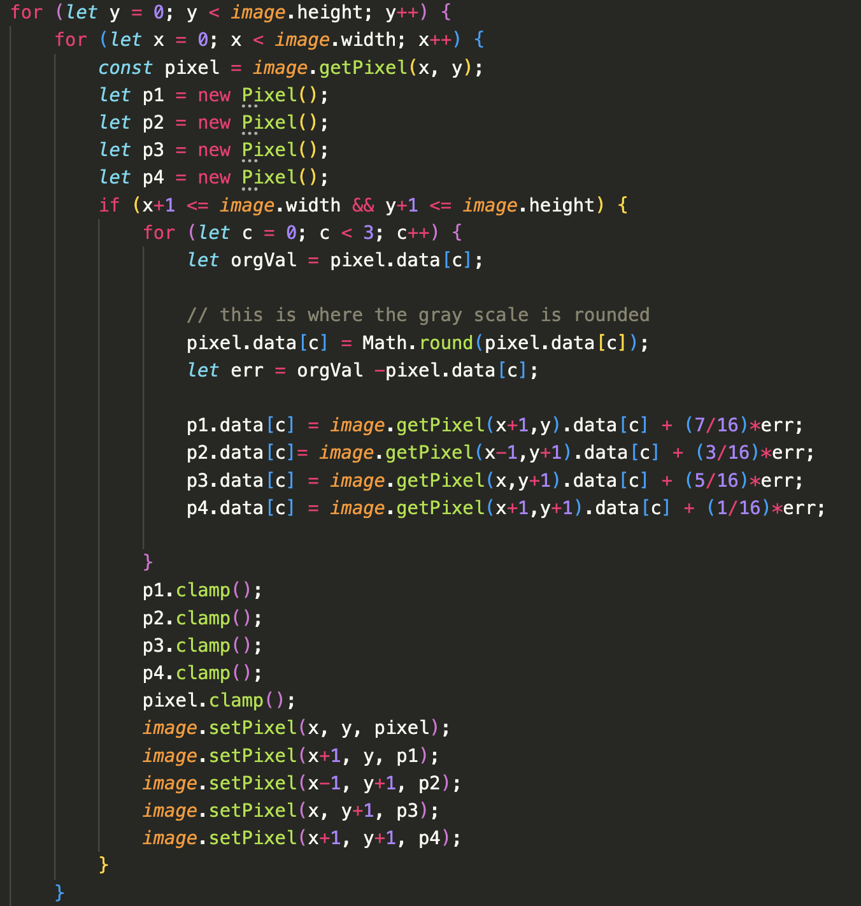
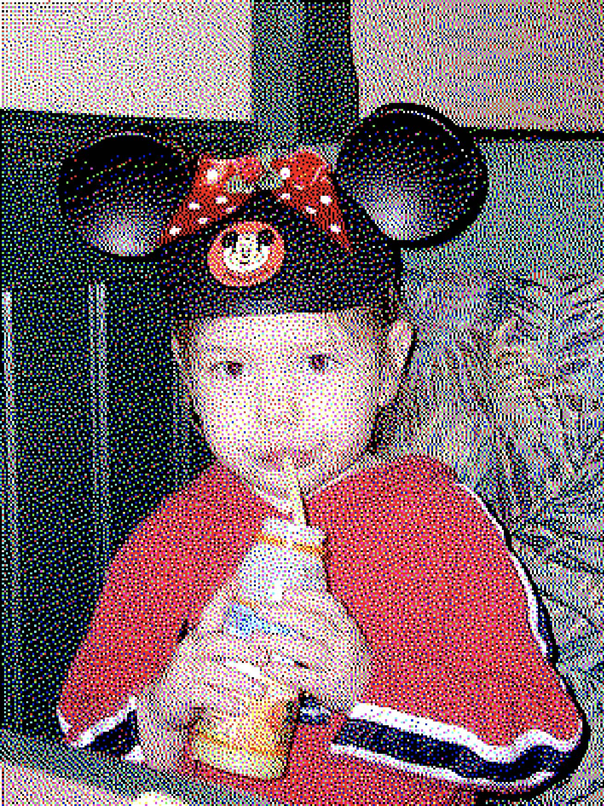
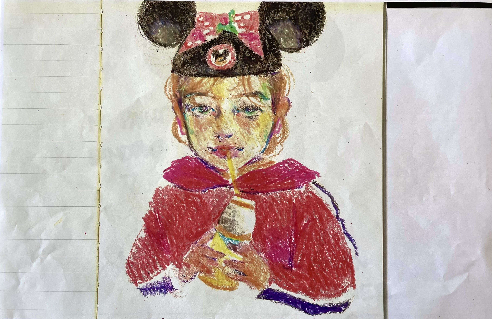
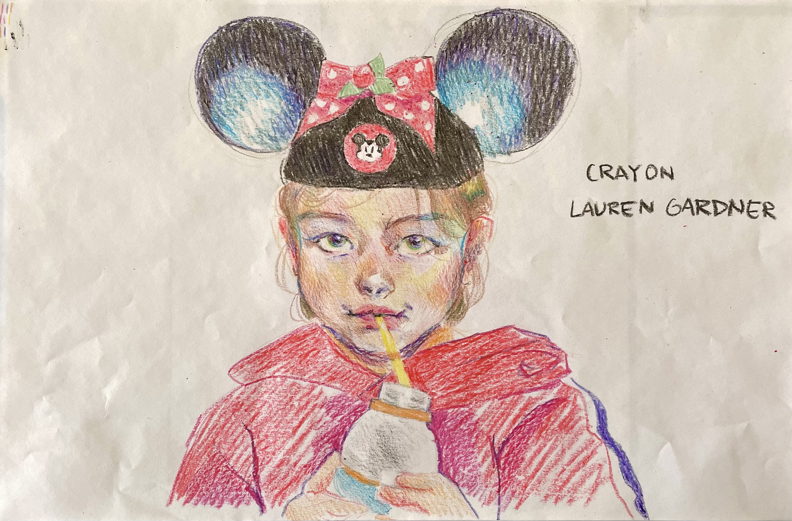
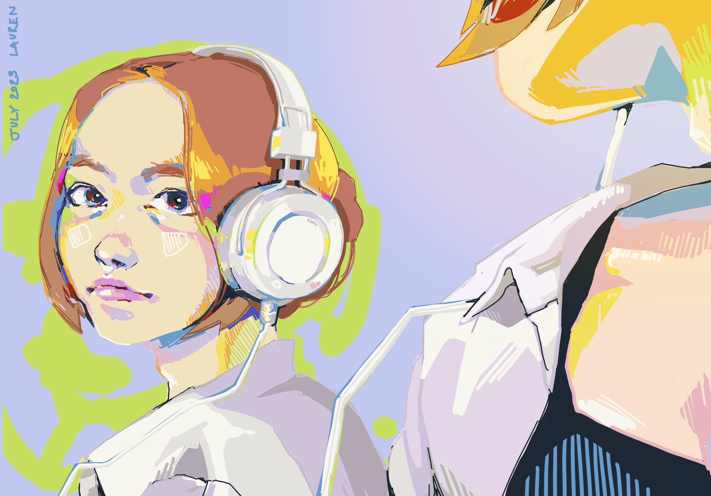

Nostalgia
N O S T A L G I A
Class: Advanced Graphic Design [VIS 415]
Year: Spring 2023
Time Frame: ~12 weeks
Assignment: Conduct an "open-ended, self-directed, and semester-length" research project with the
goal of understanding the process of design by researching it.
My goal with this project was to explore nostalgia as an art form. This project reflects a
sentimental and wistful affection for one's past. Inspired by childhood photographs, crayon
drawings, pixel art, and color palette, I explored these topics by combining them to create
a playful piece reminiscent of childhood.
My journey as an artist began in 2010 on a Windows 7 computer using MS Paint. For this
project, I revisited that platform and used it as I would when I was younger. I used a photo
of myself as a child as reference and drew it using my mouse and the program's default color
palette.


As I worked, I began to see my younger self as a snapshot in time ⸺ like the older version
of a computer program that still exists. I thought about the parallel between MS Paint and
my own life. Like MS Paint, I also have many versions. I decided to continue the piece by
exploring all of the versions of MS Paint I could find.



I discovered that Windows 3.0 Paint v.2 was able to represent colors using only a 3-bit
representation which is eight colors in their purest form: white, black, red, green, blue,
yellow, green/blue, and purple. All other colors were some combination of these 8 pixels.
I explored these dithering patterns and coded my own dithering algorithm to recreate this
style.


By reflecting on each version of the program, I came to understand the improvements
made to each version ⸺ like the addition of more colors rather than dithering. To
explore this more, I decided to work in a medium that preceded MS Paint ⸺ crayon.


Understanding design choices made in the UI/UX of MS Paint as well as the updates and
improvements of each version, for the final iteration of the project I used colored
filters and a printer to overlay each drawing on top of each other to show the ways
in which all the versions are related.


After the project was completed, I imported the default MS Paint palette into my current
drawing program, Procreate, so I would have my childhood MS Paint palette as an option.
Through this project ⸺ I saw a parallel between my life and MS Paint. As it grew over time,
I also grew and changed over time as an artist. This connection is why I named the project
N O S T A L G I A.
